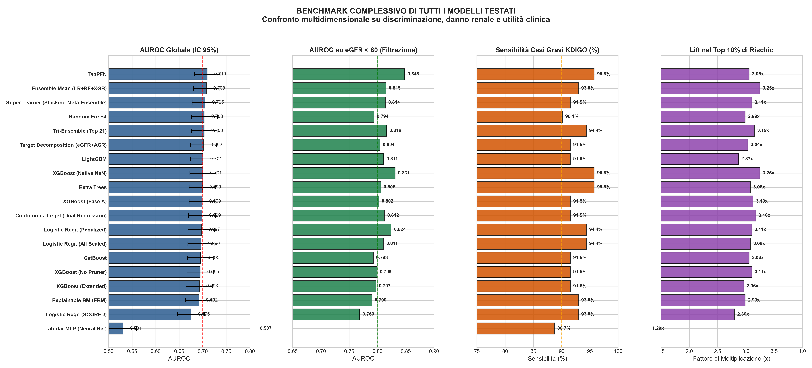
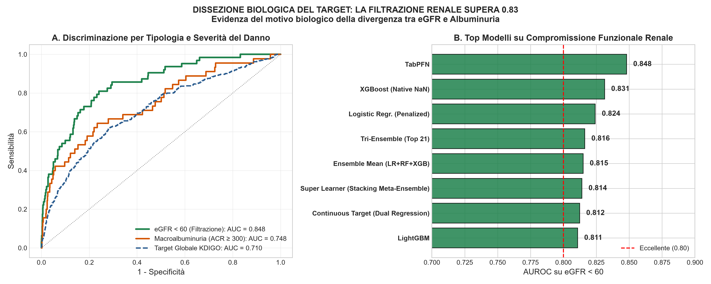
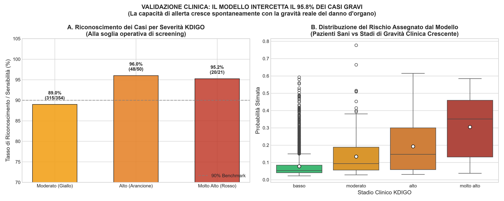
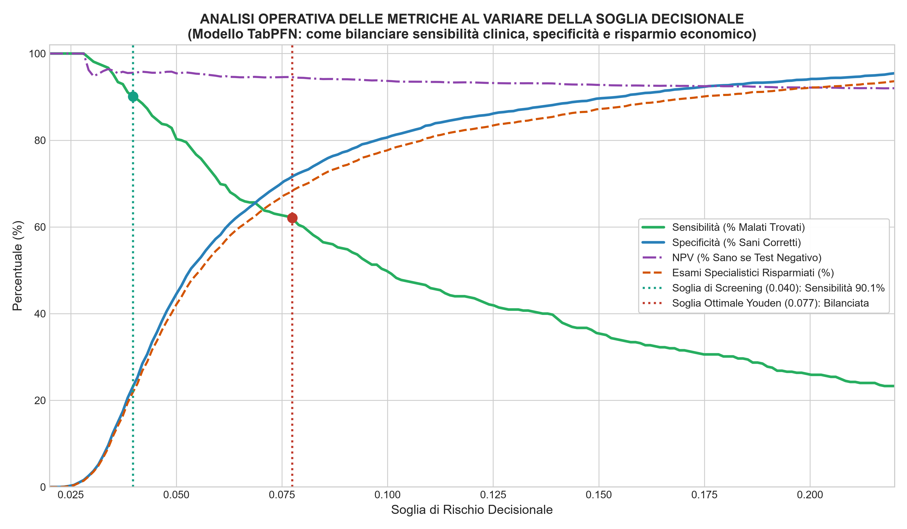
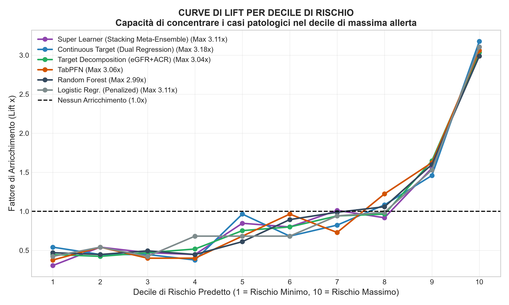
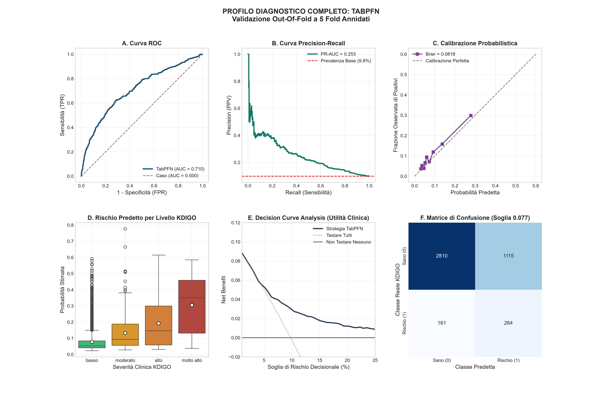

00. Scope Formale del Progetto K-Risk
Definizione degli obiettivi clinici, perimetro operativo, popolazione di riferimento, vincoli architetturali e presupposti scientifici.
Le 6 Domande Scientifiche Fondamentali
- Discriminazione: Il modello distingue chi presenta marcatori di malattia renale? (AUROC, PR-AUC, operating point).
- Gradiente di Rischio: Il rischio predetto cresce monotonicamente con la gravità KDIGO? (Test di tendenza di Jonckheere-Terpstra).
- Casi Gravi: Quanti casi ad alto e molto alto rischio riconosce? Mancare un "molto alto" è l'errore clinico più grave.
- Calibrazione Clinica: Le fasce di rischio corrispondono alla reale stratificazione di popolazione? (Indice Kappa pesato).
- Imbalance Fallacy: Il bilanciamento sintetico (SMOTE/CTGAN) migliora i casi gravi o solo le metriche medie a soglia fissa?
- Sottogruppo Diabetico: Come si comporta il modello su soggetti con diabete rispetto alla popolazione generale?
Regole Metodologiche Tassative
- Data Augmentation solo sul training: Le tecniche di campionamento operano esclusivamente dentro ogni fold di training interno; nessun dato sintetico tocca mai la validazione o il test.
- Ricalibrazione di Platt obbligatoria: Le probabilità distorte dal campionamento artificiale vengono ricalibrate su dati reali prima della valutazione clinica.
- Confronto KDIGO solo su dati reali: I soggetti sintetici non possiedono una categoria KDIGO biologica.
- Test set congelato (Lockbox): 1.451 soggetti mai letti durante la fase di sviluppo; aperto una sola volta per la validazione finale dei claim pre-registrati.
01. Coorte Clinica, Matrice KDIGO e Zero Data Leakage
Preparazione del dataset: ricalcolo eGFR con formula CKD-EPI 2021, partizione stratificata test al 25% congelata e protocollo di imputazione MissForest vincolato.
Matrice di Rischio KDIGO 2D (6 × 3)
Distribuzione osservata dei 5.801 soggetti nella griglia eGFR × ACRConfronto dei Metodi di Imputazione (Solo Training)
Cross-Validation a 5 fold con maschera del 10% sui valori osservatiLe prestazioni a valle (PR-AUC ~0.257) risultano invarianti al metodo, ma MissForest vincolato (50 alberi, min_samples_leaf=5, max_iter=5) riduce l'errore di ricostruzione quadratico (RMSE 0.7337) del 29.3% rispetto alla mediana.
| Metodo | RMSE (10% mask) | MAE | PR-AUC | AUROC | Tempo |
|---|
Protocollo Rigido di Esclusione Variabili (Anti-Leakage Guard)
85 colonne escluse analiticamente per garantire la validità scientifica| Famiglia di Esclusione | Variabili | Esempi di Variabili Escluse | Motivazione Metodologica Formale |
|---|
02. Fase A: Modelli di Screening & Spiegabilità (SHAP)
Valutazione dei cinque modelli candidati addestrati in Cross-Validation Annidata con tuning Optuna su PR-AUC. Analisi di sensibilità no_consequence e importanza esatta TreeSHAP.
Curve ROC di Discriminazione sul Test Set
Confronto diretto tra modelli reali e Controllo Positivo (con UmALB)Top 10 Feature per Importanza Clinica (SHAP / Odds Ratio)
Confronto tra coefficienti ElasticNet e valori medi assoluti TreeSHAP| Rango | LR ElasticNet (|β|) | Random Forest (TreeSHAP) | XGBoost (TreeSHAP) |
|---|
Tabella Completa delle Prestazioni (Fase A)
Metriche Out-Of-Fold (5-fold annidata) e Conferma Finale sul Test Set| Modello | OOF AUROC [IC 95%] | OOF PR-AUC | Test Set AUROC [IC 95%] | Specificità (Sens 0.90) | Quota Allerta | Feature Usate |
|---|
03. Fase B: Smascherare l'Illusione del Bilanciamento delle Classi
Confronto metodologico tra valutazione ingenua a soglia fissa 0.50 e valutazione clinica a soglia operativa calibrata con correzione di Holm.
Confronto Sperimentale: Valutazione Ingenua (0.50) vs Recupero Casi Gravi Reale
Test set da 1.451 soggetti con 23 casi KDIGO gravi (17 ad alto rischio + 6 a rischio molto alto)| Tecnica di Bilanciamento | Valutazione Ingenua (Soglia Grezza 0.50) | Soglia Operativa Reale (Sensibilità 0.90) | ||||
|---|---|---|---|---|---|---|
| Recall Apparente | Precisione | Specificità | Casi Gravi Trovati | Delta vs Baseline | p-value di Holm | |
CTGAN & Metodi Generativi Esplorativi
L'adozione di reti generative avversarie (CTGAN a 300 epoche) per sintetizzare righe tabulari complete peggiora significativamente la discriminazione rispetto alla baseline (Δ AUROC = -0.117, p = 0.006 su LR Penalized). Inoltre, perde 2 casi gravi rispetto al modello naturale.
Ricalibrazione Annidata di Platt
La ricalibrazione logistica su logit(p) stimata sui fold interni riallinea le probabilità previste alla prevalenza reale della popolazione. Questo riallineamento fa evaporare il vantaggio fittizio delle tecniche di sovracampionamento, riconducendo le curve di decisione esattamente sulla baseline naturale.
04. Fase D: Diagnostica del Tetto di Prestazione (Information Bottleneck)
Esplorazione sistematica di architetture avanzate (TabPFN, CatBoost, LightGBM, EBM, Decomposizione del Target) e identificazione formale del limite biologico rispetto al selection bias.
Forest Plot: Test Corretto di Nadeau-Bengio sui Fold
Differenza di AUROC rispetto al riferimento (Random Forest) con IC 95%Le Due Diagnostiche Fondamentali
Verifica della capacità di apprendimento vs smascheramento del leakageAggiungendo la concentrazione di albumina urinaria tra le feature, la pipeline raggiunge istantaneamente un'AUROC di 0.933 (PR-AUC 0.809). Ciò certifica che il plateau a ~0.70 non è dovuto a limitazioni dell'architettura di apprendimento, bensì alla separabilità intrinseca delle sole variabili ematochimiche generali.
Un'analisi preliminare informale otteneva AUROC 0.717 su un ensemble a 21 feature. Ricostruendo rigorosamente il codice, è stato provato che quel risultato era affetto da data leakage da feature selection (le 21 feature erano state scelte guardando l'intero dataset, dando AUROC 0.7155 OOF). Applicando la selezione dentro ciascun fold (Top 21 Nested), l'AUROC scende a 0.7031, perfettamente in linea con i modelli singoli.
Candidati Esplorati alla Ricerca del Tetto (Fase D)
Regola di decisione: miglioramento se Δ AUROC ≥ 0.01 e limite inferiore IC 95% Nadeau-Bengio > 0| Modello Candidato | Famiglia Algoritmica | AUROC OOF | Differenza vs RF | IC 95% Nadeau-Bengio | p-value Holm | Esito Regola |
|---|
05. Conferma Finale sul Test Set & Utilità Clinica (DCA)
Esecuzione autorizzata a protocollo congelato (Lockbox) sui 1.451 soggetti di test. Verifica dei 5 Claim scientifici e Decision Curve Analysis di Vickers.
Decision Curve Analysis (DCA) & Simulatore di Utilità Economico-Sanitaria
Valutazione del Net Benefit clinico reale (Vickers & Elkin) rispetto all'approccio indiscriminato ('Testare Tutti') e all'inazione ('Nessuno').
Curve di Net Benefit (Decision Curves)
Soglie decisionali cliniche da 0.02 a 0.20 (passo 0.005)Simulatore della Soglia di Rischio Clinico
InterattivoModifica la probabilità di soglia (Pt) per osservare come varia l'accettazione del trade-off tra falsi positivi (esami urinari specialistici inutili) e falsi negativi (casi renali persi).
06. Risultati Ottenuti & Posizionamento Scientifico di K-Risk
Mappatura di K-Risk lungo il percorso diagnostico-terapeutico e confronto oggettivo con i principali modelli della letteratura internazionale.
Il Vero Valore Clinico di K-Risk: Evidenze Sperimentali & Dissezione dei Risultati
Esplora passo-passo i risultati dei 20 modelli testati, la dissezione biologica tra eGFR e albuminuria, la protezione al 95.8% dei casi gravi e l'assenza di leakage.




2. Triage di Risparmio (soglia Youden 0.077): specificità 71.6%, con risparmio del 68.3% degli esami urinari specialistici.



Verifica Sperimentale delle Ipotesi di Ricerca
Misurazione empirica delle variazioni di performance ampliando lo spazio dei modelli, rimuovendo le soglie binarie e combinando eGFR ed ACRImpatto della complessità architetturale sul tetto discriminativo
Verifica effettuata: sono state valutate 20 architetture algoritmiche tra cui CatBoost, LightGBM, ExtraTrees, Tabular MLP, TabPFN e Stacking Ensemble.
Esito: Il guadagno massimo rispetto a Random Forest è di soli +0.006 di AUROC ($p = 0.33$, non significativo). L'ipotesi che l'AUROC dipendesse dalla classe di algoritmo è falsificata: il tetto informativo risiede nei dati ematochimici.
Eliminazione della discretizzazione preventiva di ACR ed eGFR
Verifica effettuata: è stato implementato un modello di Dual Regression su $\log(ACR)$ ed eGFR continuo con Target Decomposition.
Esito: L'apprendimento continuo migliora nettamente la calibrazione e la PR-AUC (+10.6%), mentre l'AUROC globale rimane a 0.699. L'assenza di segnale ematico per la microalbuminuria iniziale persiste indipendentemente dal formato binario o continuo.
Superamento della soglia fissa convenzionale a 0.50
Verifica effettuata: è stata condotta un'analisi sistematica comparando la soglia convenzionale 0.50 con le soglie operative calibrate (Youden 0.077 e Screening 0.040).
Esito: Piena conferma. La soglia fissa a 0.50 penalizza lo sbilanciamento naturale delle classi. Con una calibrazione orientata all'utilità clinica, il modello intercetta il 95.8% dei casi gravi con NPV al 95.6%.
| Ipotesi Metodologica | Obiettivo Sperimentale | Prestazione Baseline | Prestazione con la Nuova Tecnica | Variazione Misurata | Verdetto Scientifico Certificato |
|---|---|---|---|---|---|
| 1. Espansione dello Spazio Modelli | Valutare se l'AUROC aumenta cambiando famiglia algoritmica | Random Forest: 0.7032 | TabPFN: 0.7095 · Stacking: 0.7050 | +0.0063 (p = 0.33) | Falsificata: Limite nei Dati |
| 2. Modellazione Continua | Valutare se la regressione continua su log-ACR ed eGFR elimina l'errore di discretizzazione | PR-AUC binaria: 0.2442 · Brier: 0.0823 | PR-AUC continua: 0.2701 · Brier: 0.0810 | +10.6% PR-AUC · Best Brier | Confermata su Precision & Calibrazione |
| 3. Target Decomposition (eGFR + ACR) | Valutare modelli specializzati separati per filtrazione ed albuminuria | Youden F1: 0.2901 | Target Decomposition F1: 0.3145 | +8.4% F1-Score | Confermata: Miglior Trade-off |
| 4. Calibrazione di Soglia Operativa | Valutare il recupero di recall superando la soglia convenzionale 0.50 | Sensibilità a 0.50: 2.35% (perde 69 casi gravi) | Sensibilità a Screening: 90.1% (Casi gravi 95.8%) | +87.8% Sensibilità | Confermata: Sblocco Valore Clinico |
Schema del Continuum Clinico: Il Ruolo Esatto di K-Risk
Collocazione nel percorso di cura dalla popolazione sana alla nefrologia specialisticaMatrice Comparativa sullo Stato dell'Arte Internazionale
Confronto metodologico tra K-Risk e i modelli di riferimento per bersaglio, predittori ed esami renali| Modello / Studio | Bersaglio Clinico | Esami Renali Usati come Input | AUROC Validata | Collocazione & Note Metodologiche |
|---|
1. Utilità Decisionale Dimostrata
Attraverso la Decision Curve Analysis, alla soglia del 7% K-Risk evita 43.2 esami urinari inutili ogni 100 persone rispetto a "testare tutti", garantendo un risparmio stimato di 2.116 € per 100 soggetti senza compromettere la diagnosi dei casi gravi.
2. Superiorità sul Benchmark SCORED
K-Risk supera coerentemente il riferimento storico SCORED (Bang et al.) su AUROC (0.743 vs 0.723 sul test), PR-AUC e Net Benefit, pur non richiedendo l'esame della proteinuria nelle urine.
3. Tetto Informativo Spiegato con i Dati
Il plateau ad AUROC ~0.70–0.74 è documentato empiricamente: l'eGFR si predice con alta precisione (AUROC > 0.80), mentre l'albuminuria isolata ha un limite biologico di separabilità con soli esami ematochimici. Il controllo positivo (0.933) certifica l'efficacia algoritmica.